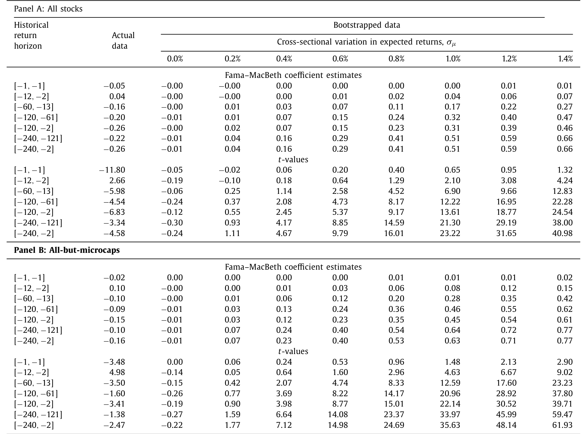
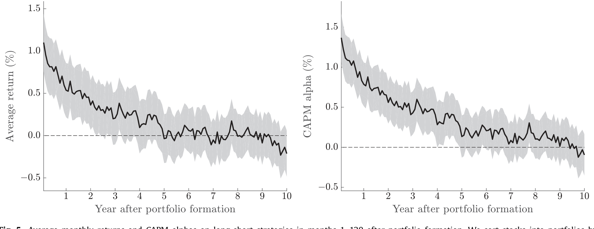
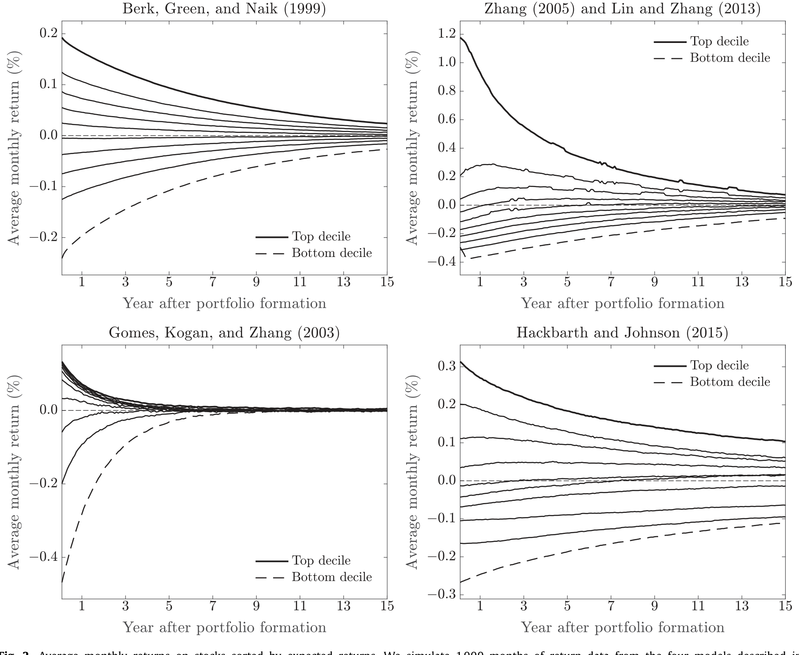
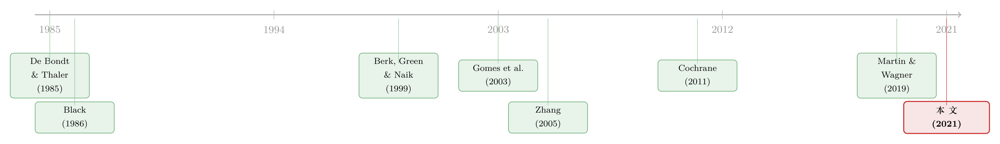

五年之后，所有股票的预期收益都回到了平均数
本文读的是 Keloharju, Linnainmaa & Nyberg (2021, Journal of Financial Economics)：股票之间的预期收益在短期确有差异，但这些差异在大约五年内收敛到零——长期贴现率在横截面上几乎不随公司而变。它的直接含义有点反直觉：异象虽然能赚钱（市场在收益上无效率），却几乎不扭曲股价（市场在价格上近似有效）。
1 一个被默认了一百年的假设
先做一道金融系一年级的题。给你一家公司未来每年的预期现金流 \(\tilde D_{t+\tau}\)，让你算它今天的价值。你会几乎不假思索地写下那个教科书第一章的公式：
$$M_t = \sum_{\tau=1}^{\infty} \frac{E(\tilde D_{t+\tau})}{(1+r)^{\tau}}$$
注意分母里那个 \(r\)。它是一个常数——一个对所有未来年份都一样、并且（在跨公司比较里）被默认为「这家公司有这家公司的贴现率」的数。整个公司金融的估值实践、资本成本 (cost of capital) 的测算、隐含资本成本 (implied cost of capital)、股权久期 (equity duration) 的计算，乃至几乎所有现值计算，都站在这块地基上：不同公司有不同的、并且会长期持续的预期收益。
这块地基有多深？Cochrane 在 2011 年的美国金融学会主席演讲里说得很直白：「一个隐含假设贯穿了我们所做的一切：预期收益、方差、协方差都是规模、账面市值比这类特征的稳定函数。」（关于这篇演讲本身，可参见《贴现率：资产定价的中心议题》。）他还顺带补了一刀：「长期存在的特征，多半比动量这类活不过一年的短期预测变量更重要。」
本文要做的，恰恰是把这块地基撬起来看看。三位作者的结论一句话：长期贴现率不分公司。短期里，价值股贵、成长股便宜、赢家和输家各有各的预期收益；但把镜头拉长到五年、十年，这些差异会塌缩到零。今天的高预期收益股票，五年后预期收益就回到了平均数。
2 收敛是普遍的：风险模型与行为模型殊途同归
为什么会收敛？这一步是全文的「世界观」，值得讲透，因为它说明收敛不是某一类模型的偏见，而是一个相当普遍的规律。
先看风险模型这一侧。生产型资产定价 (production-based asset pricing) 模型的核心就是时变的风险 (time-varying risks)。公司的风险会变——要么因为它的资产组合在变（Berk et al., 1999; Gomes et al., 2003），要么因为它面对系统性的生产率冲击和投资的不可逆成本（Zhang, 2005; Cooper, 2006）。关键在于：如果风险会变、但是平稳的（stationary），那么今天的高风险公司预期会变得不那么risky，今天的低风险公司预期会变得更risky。风险收敛，预期收益随之收敛。
接着，一个自然的问题是：那行为派 (behavioral) 模型呢？它们会不会预测长期差异？答案是——也不会，而且这几乎是定义使然。如果一只股票预期收益偏高是因为它被低估了，那么这个偏高的收益只能维持到错误定价被纠正为止。作者给了一个极干净的算术：假设一只股票相对公允价值被低估了 50%，因此预期收益高了 10 个百分点，那么在连续复利下，这个错误定价会在
$$\frac{\ln 2}{\delta} = \frac{\ln 2}{0.10} \approx 6.93 \text{ years}$$
里消失。于是反转出现：无论你信风险还是信错误定价，「预期收益的横截面差异终将消亡」都是绕不开的预测。差别只在收敛快慢，不在收敛有无。
还有一个被忽略的细节，藏在脚注里，却是理解「长期」二字的钥匙。假设一家公司连续复利的贴现率，第一年是 \(r\)、此后是 \(r'\)，那么它的 \(k\) 年期贴现率（年化）是：
$$\bar r_k = \frac{1}{k}\,r + \left(1-\frac{1}{k}\right) r'$$
短期贴现率的差异当然会渗进长期，但期限 \(k\) 一拉长，短期那一项的权重就被稀释。这正是为什么「短期有差异」和「长期没差异」可以同时成立——它们根本不矛盾。
3 识别策略一：把预期收益「清零」，再注入一点点差异
讲完世界观，真正关键的一步在于：你怎么证明长期差异不存在？这里有一个识别上的陷阱——「没找到」既可能是「真的没有」，也可能是「有，但你的检验太弱、没power看见」。作者的处理极其漂亮，我认为是全文最值钱的部分。
他们设计了一个无特征的自助法 (characteristics-free bootstrap)。思路分两步走：
第一步，拿真实的月度收益横截面，保留它的协方差结构和分布形态，但把所有股票的预期收益强行设为零。这样造出来的模拟数据，维度、因子结构、收益分布都和真实数据一模一样，唯独「预期收益的横截面差异」被清空了。
第二步，往里注入一点点人为的横截面差异——让预期月收益的横截面标准差等于某个 \(\sigma_\mu\)，然后去测：我有多大把握能把这点差异探测出来？
探测的工具是一组 Fama–MacBeth 横截面回归。对每个月 \(t\)：
$$r_{it} = a_t + b_t \times \bar r_{i,\,t-k_1,\,t-k_2} + e_{it} \tag{1}$$
其中 \(\bar r_{i,\,t-k_1,\,t-k_2}\) 是股票 \(i\) 从 \(t-k_2\) 到 \(t-k_1\) 的平均过去收益。这里的洞察是：如果股票的预期收益有持续差异，那么这个斜率 \(\hat b_t\) 就和这些差异的横截面方差成正比，\(\hat b \sim \hat\sigma_\mu^2\)。在「预期收益恒定、收益创新 IID」的零假设下，斜率有一个干净的闭式：
这个式子说明两件事。其一，只要存在持续的预期收益差异（\(\sigma_\mu^2>0\)），过去收益就应当正向预测未来收益，斜率为正。其二，把过去收益的窗口拉长（增大 \(k_2-k_1\)），分母里的噪声项被摊薄，信号占比上升——长窗口反而让微小的持续差异更容易被看见。
现在见证奇迹的时刻。作者设了一个极小的 \(\sigma_\mu = 0.4\%\)（月度）。这个数字小到什么程度？它意味着预期收益的差异只解释了已实现收益横截面方差的 \(R^2 = 0.07\%\)（背景：1963 年 7 月到 2018 年 12 月，美股月收益的平均横截面方差是 0.0229）。就这么一丁点差异，自助法说：在「除微盘股外」(all-but-microcaps) 的样本里，过去五年的收益也足以以 \(t = 2.07\) 的统计量正向预测横截面。
然后，看真实数据。在真实世界里，除了过去一年（也就是动量），过去收益根本不正向预测未来收益。那个五年期回归的 \(t\) 值是多少？$-3.50$。不是零，是显著的负数。
表 1 把这场对照赛摆在了一起：第一列是真实数据，其余各列是 \(\sigma_\mu\) 从 0% 一路拨到 1.4% 的模拟数据。你能清楚看到，哪怕只注入很小的 \(\sigma_\mu\)，模拟里的斜率都会变正、变显著；而真实数据偏偏待在「负」的那一侧。

Table 1: reports results from cross-sectional regressions
这套设计的高明之处在于它直面 power 问题。它没有简单地说「我没找到差异所以差异不存在」，而是先证明「就算差异小到 \(R^2=0.07\%\)，我这套检验也看得见」，再指出真实数据连这点影子都没有——反而朝相反方向走。这把「未拒绝零假设」升级成了一个有力得多的陈述：长期差异若有，也必然小到可以忽略。
4 为什么过去的赢家，长期反而会输？
负的 \(t\) 值本身就是个谜：过去收益为什么会反向预测？这正是长期反转 (long-term reversal) 现象。教科书的解释来自 De Bondt and Thaler (1985)：投资者对信息过度反应 (overreaction)，所以赢家被捧得太高、随后回落，输家被打得太狠、随后反弹。
但作者给了一个完全不同的读法，而且和他们的主线严丝合缝。他们证明：生产型模型只有在「贴现率差异足够持续」时，才会预测过去收益与未来收益正相关。长期反转之所以出现，恰恰需要两个条件同时成立：(1) 预期收益存在很大的差异，并且 (2) 这些差异迅速收敛到零。在这种情形下，过去收益主要测量的不是预期收益的水平，而是它的变化。
换句话说，一只过去收益很高的股票，更可能是「预期收益下降了的股票」，而不是「预期收益本来就高的股票」。高过去收益 = 贴现率下调 = 未来预期收益反而更低。反转因此发生，但驱动它的不是投资者的非理性，而是贴现率向均值的收敛。这个解释和 De Bondt-Thaler 的行为故事截然不同，却同样能解释数据——而且它顺手把长期反转变成了「长期贴现率不分公司」这一主论点的佐证而非反例。
5 组合排序：异象的收益如何在五年里蒸发
自助法之外，作者还用了最朴素的办法——组合排序——来给同一结论提供肉眼可见的证据。他们把 55 个收益预测变量 (return predictors) 组合成一个对公司预期收益的代理，按它把股票分成十档，看多空（最高档减最低档）组合在形成之后逐年的收益。
数字会说话。在形成后的第一年，最高档与最低档的平均收益之差是 0.77%（\(t = 4.90\)），又大又显著。但到了第三年，这个差降到 0.31%（\(t = 2.10\)）；到第五年，只剩 0.15%（\(t = 1.12\)），统计上已经和零没法区分了。
更狠的是 CAPM alpha 的置信区间。形成后第一年，多空组合 CAPM alpha 的 95% 置信区间是 77 到 130 个基点——稳稳为正。到第十年，这个区间变成 −21 到 22 个基点——牢牢卡在零的两侧。也就是说，长期估计精确到足以排除任何像样的持续差异：不是「测不准所以看不见」，而是「测得很准，确认了没有」。
图 5 把这件事画了出来：多空组合的收益和 alpha 在头一两年里活蹦乱跳，随后一路衰减、贴着零线躺平。

Figure 5: Average monthly returns and CAPM alphas on long-short strategies in months 1–120 after portfolio formation. We sort stocks into portfolios b
（异象收益随时间衰减这件事，本身也是一条活跃的研究线。它究竟是被套利者吃掉、还是基本面自己缩水，可另见《异象的消退，是被「套利」吃掉了，还是基本面自己缩水？》。本文的角度不同：它不问「为什么衰减」，而问「衰减到零这件事本身意味着什么」。）
6 把公司特征拆成「永久」与「暂时」
走到这里，故事还差最后一块拼图。作者注意到一个张力：收益的横截面差异五年就归零了，但 beta 和公司特征 (firm characteristics) 的差异——比如账面市值比、盈利能力——有一部分是长期持续的。一家高账面市值比的公司，往往十年后还是高账面市值比。
这就生出一个可证伪的预测：如果收益差异死掉了、而特征差异没死，那么特征里那个持续的部分，就不可能和平均收益的差异挂钩。能预测收益的，只能是特征里那个暂时的部分。
于是他们把公司特征分解成永久成分 (permanent component) 和暂时成分 (transitory component) 两半，分别看谁能赚到溢价。结果一边倒：特征的暂时差异带来的溢价与折价，大约在五年内蒸发殆尽；特征的持续差异，则不与任何平均收益差异相关。
这恰好和本文的主线合拍——能预测长期收益的东西，本身也是短命的。（这条「永久 vs 暂时」的思路，与《同一个 book-to-market，凭什么有的「值钱」有的「不值钱」？》是同一家族的问题，值得对照着读。）
7 生产型模型里的收敛机制
既然全文反复诉诸「风险会收敛」，那就有必要看清这些模型内部到底发生了什么。作者描述并模拟了四个生产型资产定价模型，它们机制各异，却都内生出收敛：
-
模型一，Berk, Green & Naik (1999)：在手资产 vs 增长期权。 公司每期遇到新项目，接受正 NPV 的那些；项目的系统性风险各不相同，老项目随机过时。因为新项目都来自同一个分布，公司在渐近意义上彼此相同。一家公司的价值 = 在手资产价值 + 未来增长期权价值，而后一项对所有公司都一样——高风险公司平均会遇到降低风险的项目，低风险公司则相反。
-
模型二，Gomes, Kogan & Zhang (2003)：带增长期权的一般均衡。 把上面的投资机制推进到一般均衡，让家庭部门和市场出清内生定价核。收益由条件 CAPM 完全刻画；规模和账面市值比之所以能预测收益，是因为它们与真实的条件市场 beta 相关。
-
模型三，Zhang (2005) 与 Lin & Zhang (2013)：生产冲击与投资的不可逆成本。 定价核被直接参数化成反周期的风险价格。坏时光里、风险价格高时，低生产率公司发现「甩掉无效资本」代价高昂。因为生产率冲击均值回归，公司的预期收益随之收敛。
-
模型四，Hackbarth & Johnson (2015) 与 Gu et al. (2017)：经营杠杆与实物期权。 公司在上调和下调资本时都面对准固定成本和可变成本，随机冲击让风险（及预期收益）均值回归。
图 2 把四个模型各自模拟出的、横截面去均值后的月收益画在一起。模型在离散度上差别很大：Berk et al. (1999) 里最高档与最低档的预期月收益之差只比 40 个基点多一点，而 Zhang (2005) 里这个差超过 140 个基点；分布形态也不同（有的近乎对称，有的明显左偏）。但共同的元素只有一个——收敛。

Figure 2: Average monthly returns on stocks sorted by expected returns. We simulate 1,0 0 0 months of return data from the four models described in
作者特别点出一个旁证：Hackbarth & Johnson (2015) 为了产生足够的持续性，把盈利能力的自相关系数设到了 0.97，而真实数据里只有 0.51。也就是说，连最「持续」的那个模型，用的也是比现实夸张得多的参数——现实中的持续性，比模型假设的还要弱。
8 含义：收益无效率，价格近似有效
把所有线索收拢，落到那个最反直觉、也最重要的结论上。
如果任何预期收益差异都只活几年，那么它们在平均贴现率里、在公司估值里，权重就微乎其微。Binsbergen and Opp (2019) 提醒我们，越持续的异象，对实体经济造成的扭曲越大。作者顺着这个逻辑算了一笔账：一个每年产生 10% 异常收益、且持续整整一年的异象，会让价格偏离 10%；而一个其他方面都相同、但只持续一个月的异象，造成的价格偏差还不到 1%。
于是反转出现：如果绝大多数异象都是短命的（本文的估计正指向这一点），那么股市可以在收益上无效率、却在价格上接近有效。它到底「有没有效率」，取决于你的投资期限——套利者通过频繁交易异象能赚得盆满钵满，但对一个买入持有的投资者来说，市场已经近乎有效。这恰好呼应了 Black (1986) 那句著名的「有效」定义：价格落在价值的两倍之内就算有效，「照这个标准，几乎所有市场在几乎所有时间里都是有效的」。
回到第 1 节那个现值公式。当它被用来给价值、盈利能力、投资这些效应背书时（Novy-Marx, 2013; Fama and French, 2015），那个「贴现率恒定」的假设就从无伤大雅变得举足轻重了：如果预期收益会变，那么「高盈利能力」并不意味着「这家公司今天的贴现率就高」。作者很克制地承认——没拒绝零假设不等于可以接受它；但既然长期差异小到测不出来，那么在「所有公司长期贴现率相等」这个零假设下工作，似乎是更合理的操作。
9 文献脉络
把这条线捋一捋。最早，长期反转的现象由 De Bondt and Thaler (1985) 记录下来，并被解读为投资者的过度反应——这是行为金融的奠基观察之一。与此同时，Black (1986) 的《Noise》给「市场有多有效」立下了那个「两倍之内」的宽松标尺。

接着，生产型资产定价崛起，把「时变风险」搬上中心舞台：Berk, Green & Naik (1999) 用在手资产与增长期权解释收益，Gomes et al. (2003) 推进到一般均衡，Zhang (2005) 用不可逆投资与反周期风险价格解释了价值溢价。这些模型共享一个被长期忽视的副产品——风险与预期收益会收敛。
然后，Cochrane (2011) 的主席演讲把「贴现率」立为资产定价的中心议题，并默认预期收益是特征的稳定函数；Martin and Wagner (2019) 则从期权价格反推，强调预期收益的短期变化比人们以为的还要大。
本文 (Keloharju, Linnainmaa & Nyberg, 2021) 站在这个交汇点上：它承认短期差异（呼应 Martin-Wagner），却用自助法、组合排序、永久-暂时分解三条独立路径论证长期差异微乎其微，并把长期反转从「过度反应」重新解读为「贴现率收敛」，最终落到「收益无效率、价格近似有效」这个调和性的结论上。
评论与延伸（Q&A + 研究方向）
（a）几个可能的疑问
Q：「没找到长期差异」会不会只是检验没有 power？
这正是作者最用力回应的点，也是本文最聪明的地方。他们不是简单地「没找到就宣布没有」，而是先用自助法证明：哪怕注入小到 \(R^2=0.07\%\)（\(\sigma_\mu=0.4\%\)）的持续差异，过去五年收益也能以 \(t=2.07\) 把它探测出来。结果真实数据的 \(t\) 值是 $-3.50$——不仅没有正信号，反而显著为负。所以这是「测得很准、确认接近零」，而非「测不准」。
Q：长期反转早就被 De Bondt-Thaler 解释成过度反应了，本文有何不同？
现象一样，机制相反。行为解释说赢家被高估、随后回落；本文说高过去收益主要反映贴现率下调，所以这只股票未来预期收益反而更低。反转不来自非理性，而来自预期收益向均值收敛。两者在数据上都成立，但本文的版本和「长期贴现率不分公司」是自洽的。
Q：这是不是说异象都是假的、不能赚钱？
恰恰相反。本文明确承认短期异象真实存在、能赚钱——第一年多空收益差 0.77%（\(t=4.90\)）。它的主张是这些差异短命：第五年只剩 0.15%（\(t=1.12\)）。所以套利者照样能赚，只是这些收益对长期估值几乎没有影响。
Q：「收益无效率但价格有效」是不是文字游戏？
不是，它有清晰的算术支撑。价格偏差 ≈ 异常收益 × 持续时间。一个 10%/年、持续一年的异象造成 10% 的价格偏差；只持续一个月的同等异象，价格偏差不到 1%。既然多数异象短命，价格层面的累积扭曲就很小。市场的「效率」因此取决于投资期限。
Q：betas 和特征明明有持续差异，怎么调和？
这正是本文的可证伪预测。收益差异五年归零，而特征差异部分持续。把特征拆成永久与暂时两半后，只有暂时成分赚到溢价（约五年内消失），持续成分与平均收益无关。所以「持续的特征」与「持续的收益差异」并不等价。
Q：那资本成本测算、估值模型是不是都白做了？
作者很克制：未拒绝零假设不等于可以接受它，长期差异「若有也必然很小」。但他们建议，既然差异小到测不出来，按「长期贴现率相等」来工作可能比硬塞一个跑赢数据的「时变贴现率」更稳妥——尤其是那些依赖恒定贴现率才成立的现值推导。
（b）几个可能的研究问题与提案
1. 公司债里的长期贴现率会不会也「不分公司」？ - 【经济故事】本文的逻辑（风险均值回归 ⇒ 预期收益收敛）若成立，理应不限于股票。信用利差的横截面差异是否也在若干年内收敛？若收敛，则「信用风险溢价分公司」这个被广泛默认的假设，在长期同样可疑。 - 【可行性】中。数据有 TRACE + Mergent FISD，可构造与本文平行的组合排序和长窗口回归；难点在于债券到期、违约带来的样本删失会污染长期收益，需要小心处理删失偏差与久期匹配（可借鉴《久期错配》的思路）。
2. 外资持有人的进出，是否系统性地改变了一家公司的长期贴现率？ - 【经济故事】如果长期贴现率真的不分公司，那么需求侧冲击（如外资大举进入某国某类债券/股票）应当只产生暂时的预期收益偏移、并在几年内收敛回去。检验这一点能把「需求决定贴现率」与「贴现率长期收敛」两个视角对接起来。 - 【可行性】中。需要持有人层面数据（如 13F、各国托管/央行口径的外资持仓），用指数纳入或资本账户开放作为外生冲击，跟踪冲击后多年的收益路径。识别可行，但「外资冲击是否真外生」需要论证。
3. 把自助法的「power 标尺」搬到流动性溢价上。 - 【经济故事】流动性溢价常被当作一种持续的横截面定价差异。但用本文的清零-注入框架可以问：流动性溢价里有多少是持续的、多少是会在几年里收敛的暂时成分？ - 【可行性】高。流动性度量（Amihud、价差类）现成，本文的自助法可直接复用，把「过去收益」换成「过去流动性」即可。难点主要是流动性度量的噪声较大。
4. 永久-暂时分解能否预测公司的真实投资？ - 【经济故事】本文说只有特征的暂时成分预测收益。一个自然的延伸：暂时成分是否也对应公司真实投资/发债的暂时调整？这能把资产定价侧的结论和公司金融的行为连起来。 - 【可行性】中。Compustat 投资与发债数据可得，分解方法本文已给；难点是真实投资的内生性，需要额外的识别（如行业层面的需求冲击）。
5. 跨国检验：哪些市场的收敛更慢？ - 【经济故事】若收敛速度由风险均值回归的速度决定，那么制度更弱、套利更受限的市场，长期差异应更持久。这能把「市场效率取决于投资期限」的论点跨国地量化。 - 【可行性】中偏低。需要多国长样本（如 Datastream），数据质量和幸存者偏差是硬伤（可参照《美国只是侥幸活下来的那一个吗？》对幸存者偏差的处理）。
最后说说我的判断。
贡献。 我认为本文最大的贡献不在于「发现」了收敛——收敛在那些生产型模型里早就隐含存在——而在于它把一个被当作背景噪声的副产品，提炼成了一个可被高精度检验的中心命题，并设计了那套清零-注入的自助法，把「未拒绝零」升级成「确认接近零」。把长期反转从过度反应重新解读为贴现率收敛，是个漂亮的副产品。「收益无效率、价格近似有效」这个调和性结论，给了「市场是否有效」这场打了几十年的口水仗一个有期限维度的答案。
对识别的担忧。 我有两点保留。其一，整套论证高度依赖「预期收益的横截面方差 \(\sigma_\mu^2\) 是平稳的、可被长窗口平均探测」这个统计结构；如果真实世界里 \(\sigma_\mu\) 本身在时序上剧烈漂移（regime-dependent），长窗口回归的解读会更微妙。其二，组合是用 55 个预测变量的组合构造的，这个组合本身在样本内拟合了短期收益——它在长期归零，究竟是「真无差异」还是「组合权重本就只捕捉了短期信号」，两者在实证上不易完全分开。
后续想看到什么。 我最想看到的是把这套框架移植到信用市场和外资持有人的场景——如果连「信用风险溢价分公司」「外资冲击改变长期贴现率」这些信用市场里习以为常的假设，也在长期里被证明只是暂时的扰动，那本文的冲击波就远不止于股票横截面了。
参考文献
- Berk, J. B., Green, R. C., & Naik, V. (1999). Optimal investment, growth options, and security returns. Journal of Finance 54(5), 1553–1607.
- Binsbergen, J. H., & Opp, C. C. (2019). Real anomalies. Journal of Finance 74(4), 1659–1706.
- Black, F. (1986). Noise. Journal of Finance 41(3), 528–543.
- Cochrane, J. H. (2011). Presidential address: Discount rates. Journal of Finance 66(4), 1047–1108.
- Keloharju, M., Linnainmaa, J. T., & Nyberg, P. (2021). Long-term discount rates do not vary across firms. Journal of Financial Economics 141(3), 946–967.
- Lin, X., & Zhang, L. (2013). The investment manifesto. Journal of Monetary Economics 60(3), 351–366.
- Linnainmaa, J. T., & Roberts, M. R. (2018). The history of the cross section of stock returns. Review of Financial Studies 31(7), 2606–2649.
- Martin, I., & Wagner, C. (2019). What is the expected return on a stock? Journal of Finance 74(4), 1887–1929.
- McLean, R. D., & Pontiff, J. (2016). Does academic research destroy stock return predictability? Journal of Finance 71(1), 5–32.
- Novy-Marx, R. (2013). The other side of value: The gross profitability premium. Journal of Financial Economics 108(1), 1–28.
- Zhang, L. (2005). The value premium. Journal of Finance 60(1), 67–103.